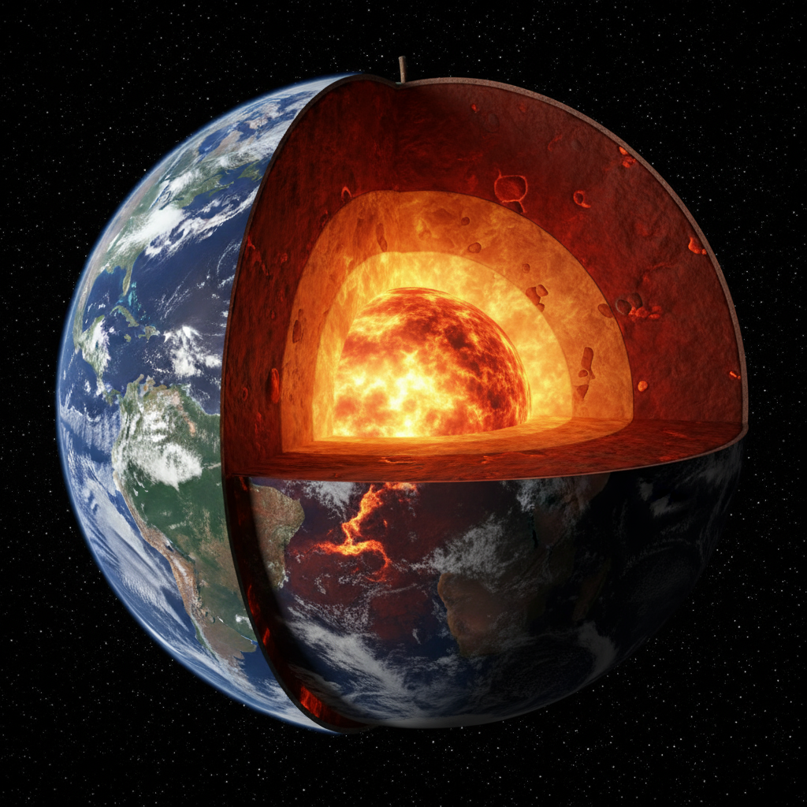
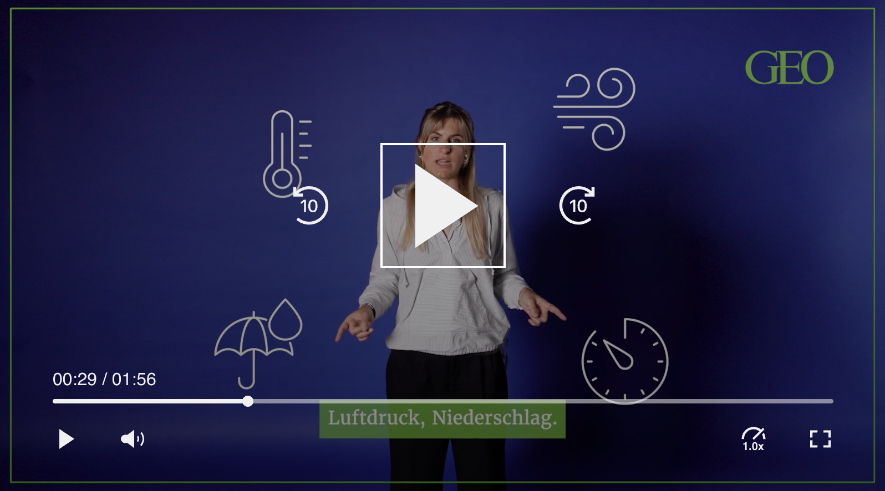
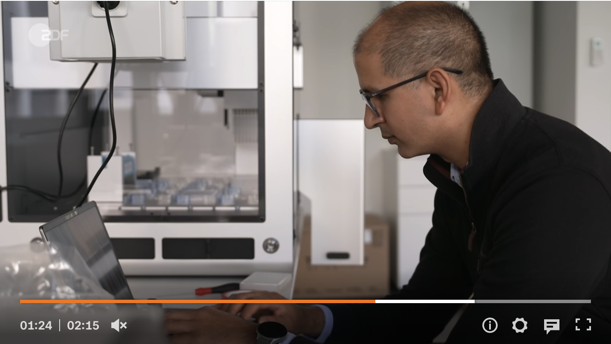
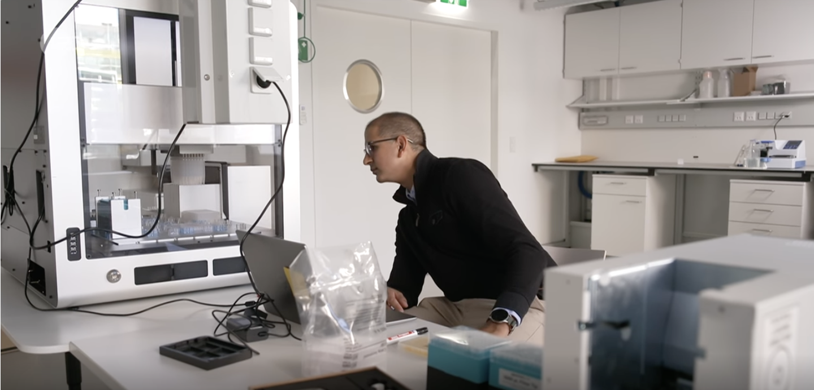
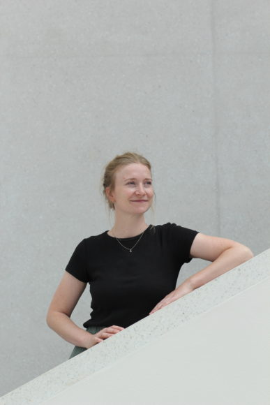
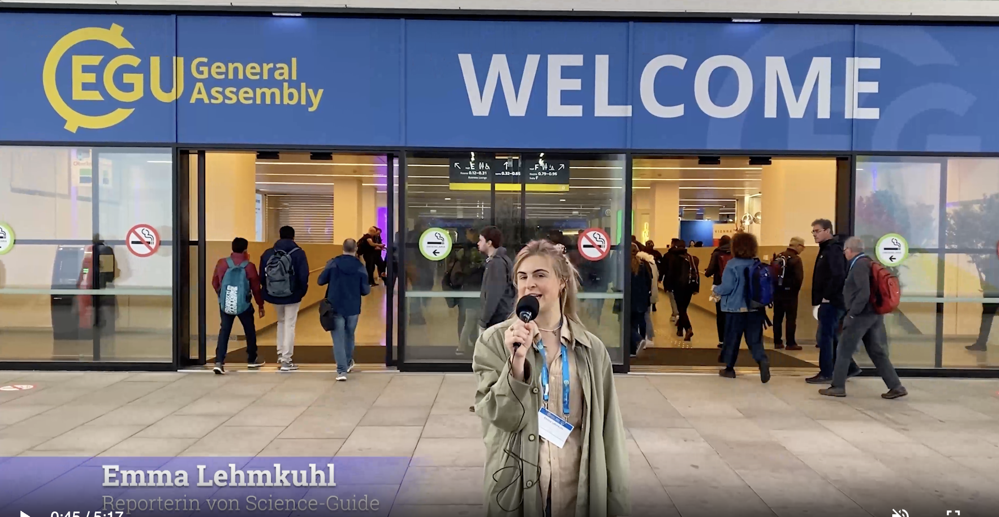

Beiträge
Beiträge · KI · Special Interest
Iranische Kickboxerin: Ihr Vater sperrte sie ein – weil sie gewann
Ein Nomadenmädchen aus dem Iran wird nationale Kickboxmeisterin. Heute leitet sie ihre eigene Kampfschule und kämpft um deren Bestehen: die Geschichte von Sahar Susan Rashidi.
GEO

Der innere Erdkern dreht sich langsamer. Was bedeutet das?
Jahrzehntelang rotierte der innere Erdkern schneller im Verhältnis zum Erdmantel. Der Erdkern kann sich langsamer drehen. Könnte er auch zum Stillstand kommen?
Lesen →

Surfen in Marokko: Wie ich am Ende der Wüste die perfekte Welle fand
Eine Reise an die Atlantikküste Marokkos auf der Suche nach der perfekten Welle und eine Entdeckungsreise durch die Surfhistorie des Landes.
Lesen →ZDF


Trump kürzt bei Forschung: Wissenschaftler ziehen nach Österreich
Wie Österreich mit neuen Stipendien und erleichterten Professuren Spitzenforscher aus den USA anzieht.
Lesen →Finanzskandal in Österreich: Prozess gegen René Benko
Signa-Gründer vor Gericht: Welche Vorwürfe im Raum stehen und wie der erste Prozess verläuft.
Lesen →Max-Planck-Gesellschaft

Wie Wissenschaft im Film authentisch bleibt
Antje Boetius über den Thriller „Der Schwarm": Wie fiktionale Formate Wissenschaft erfahrbar machen und sie realistisch darstellen.
Lesen →Der Einfluss von Ozon auf den Geruchssinn von Insekten
Ein Gespräch über die Auswirkungen von Luftverschmutzung auf Gesundheit und Umwelt. Warum Männchen sich attraktiver finden, wenn sie sich nicht mehr riechen.
Lesen →Fünf Fragen an Daria Kim: ChatGPT oder ich - wer hat die Rechte?
Interview im Heft "Max-Planck Forschung" zu den rechtlichen Aspekten von KI-generierten Inhalten.
Lesen →KURT. Science Guide. Eldoradio.
Kommentar: Was wir über die Wissenschaft nicht wissen
Wieso wir alle das Wissenschaftssystem verstehen sollten.
Lesen →
Die Spurenleserin auf der Suche nach NS-Raubkunst
Ein Thema, das viele lieber verschweigen, spielt in ihrem Leben eine große Rolle: Die deutsche Vergangenheit. Eline van Dijk spürt die Herkunft von Kunstwerken auf, die während der Nazi-Zeit verschwunden sind. Ein Portrait über eine unermüdlich Suchende.
Lesen →Medizin und Ozeanforschung: Auf der Spur neuer Wirkstoffe
Wie Meeresforschung und Medizin zusammenwirken, um neue Wirkstoffe und Diagnoseverfahren zu entdecken.
Lesen →
Akademisches Reisen: Vernetzung als Herausforderung für Klimaforscher:innen?
Warum reisen Forschende um die Welt, wenn sie sich auch online austauschen könnten? Ein Video über den wissenschaftlichen Austausch und das Dilemma zwischen Reisen und Klimaschutz.
Video schauen →Kollegengespräch: Sport-App im Test
Gespräch über einen Selbsttest einer Sport-App bei eldoradio*. Wie locker wir unsere Bewegungsdaten teilen und wie mit solchen Apps schon Militärtriningsgelände gefunden wurden.
Radiobeitrag hören →